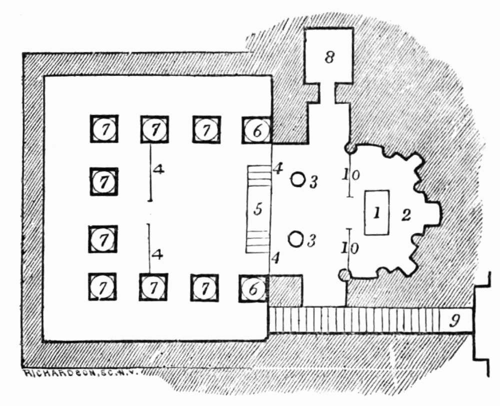

Plan of the church, the convent of the Pulley.

| 1. | Altar. | 6. | Two three-quarter columns. |
| 2. | Apsis, apparently cut out of the rock. | 7. | Eight columns. |
| 3. | Two Corinthian columns. | 8. | Dark room cut out of the rock (there is another corresponding to it under the steps). |
| 4. | Wooden partitions of lattice-work, about 10 ft. high. | 9. | Steps leading down into the church. |
| 5. | Steps leading up to the sanctuary. | 10. | Screen before the Altar. |